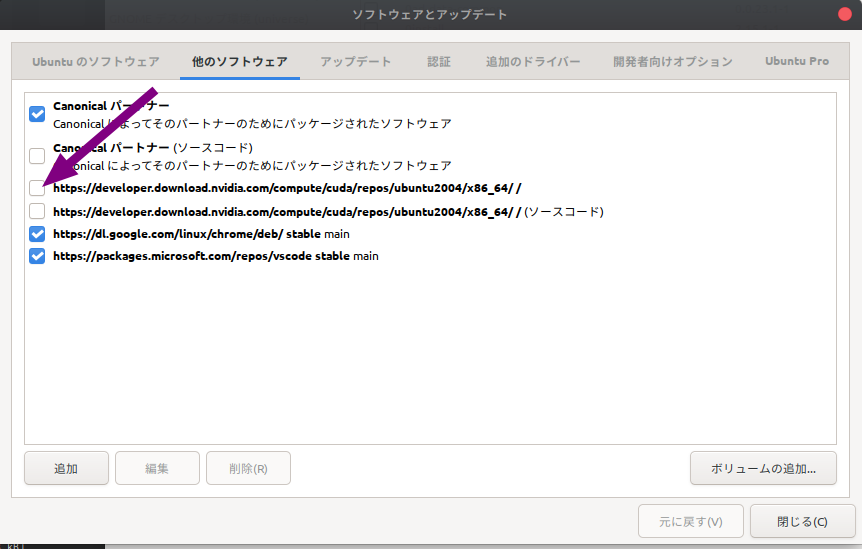
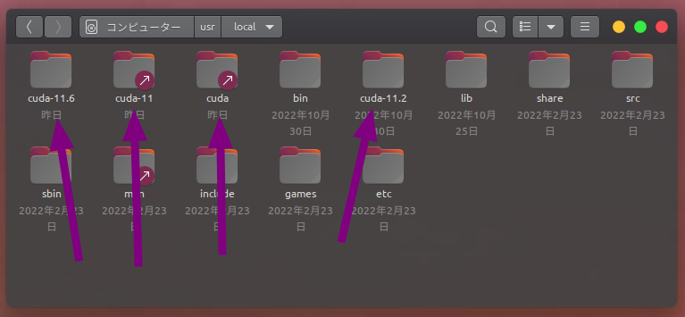
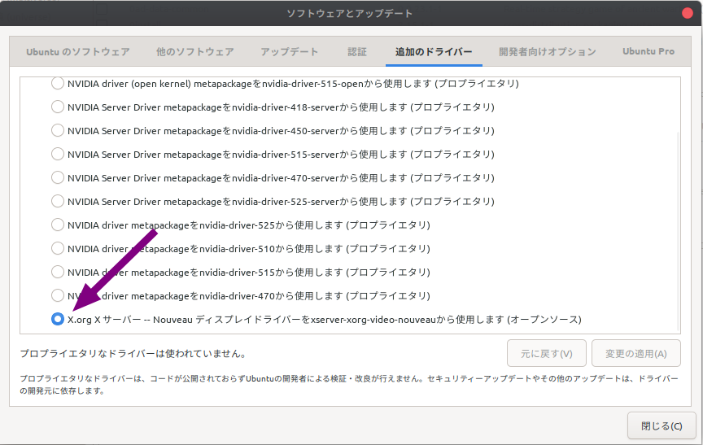
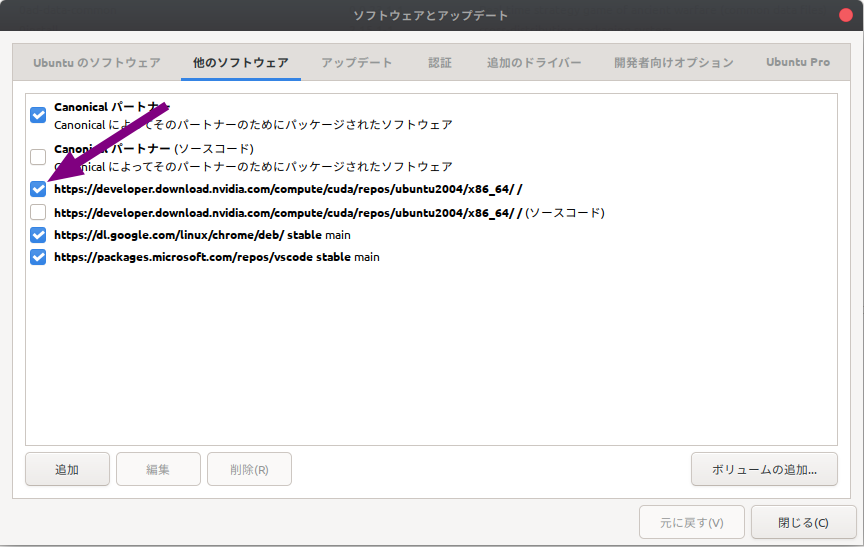
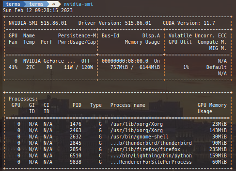

Remove all cuda lib and re-install method
Due to frequent updates, CUDA may stop working if you are not careful when updating your system.
Here are the steps to resolve such situations.
Uncheck nvidia repository

sudo apt update
Remove cuda files

sudo rm -rf /usr/local/cuda*
sudo apt update && sudo apt upgrade -y
Make sure the driver is the Nouveau display driver. 
Delete docker images
Check the current docker image.
$ docker images
REPOSITORY TAG IMAGE ID CREATED SIZE
<none> <none> 7015867e0ff7 2 weeks ago 18.2GB
tokaikaoninsho/face01_no_gpu 1.4.12 dd34d05422c5 2 weeks ago 2.53GB
tokaikaoninsho/face01_gpu 1.4.12 61d32d36b9ab 2 weeks ago 19.2GB
tokaikaoninsho/face01_no_gpu 1.4.11 6ad4ba3cbe88 3 weeks ago 3.65GB
tokaikaoninsho/face01_gpu 1.4.11 682da444845a 3 weeks ago 20.3GB
face01_no_gpu 1.4.11 efc3845d390a 3 weeks ago 2.5GB
face01_gpu 1.4.11 7398d955d905 3 weeks ago 19.2GB
<none> <none> 6c61d0364450 3 weeks ago 1.66GB
<none> <none> b2e38e65b233 3 weeks ago 18.2GB
ubuntu 20.04 d5447fc01ae6 2 months ago 72.8MB
tensorflow/tensorflow latest-gpu-jupyter cf6cb74c9ec4 5 months ago 6.19GB
nvidia/cuda 11.0.3-base-ubuntu20.04 8017f5c31b74 6 months ago 122MB
Delete docker images.
$ docker rmi 7015867e0ff7 dd34d05422c5 61d32d36b9ab 6ad4ba3cbe88 682da444845a efc3845d390a 7398d955d905 6c61d0364450 b2e38e65b233 d5447fc01ae6 cf6cb74c9ec4 8017f5c31b74
$ docker images
REPOSITORY TAG IMAGE ID CREATED SIZE
<none> <none> 7015867e0ff7 2 weeks ago 18.2GB
tensorflow/tensorflow latest-gpu-jupyter cf6cb74c9ec4 5 months ago 6.19GB
nvidia/cuda 11.0.3-base-ubuntu20.04 8017f5c31b74 6 months ago 122MB
$ docker rmi -f nvidia/cuda:11.0.3-base-ubuntu20.04
Untagged: nvidia/cuda:11.0.3-base-ubuntu20.04
Untagged: nvidia/cuda@sha256:57455121f3393b7ed9e5a0bc2b046f57ee7187ea9ec562a7d17bf8c97174040d
Remove docker images with -f option that cannot be removed.
$ docker rmi -f tensorflow/tensorflow:latest-gpu-jupyter
Untagged: tensorflow/tensorflow:latest-gpu-jupyter
Untagged: tensorflow/tensorflow@sha256:a72deb34d32e26cf4253608b0e86ebb4e5079633380c279418afb5a131c499d6
Deleted: sha256:cf6cb74c9ec4ff92634514468a6dd2323dead73720b58e1700b9478557668b3d
$ docker rmi -f 7015867e0ff7
Deleted: sha256:7015867e0ff7461e1776bfa43f7383f1a6ec748817e8afb60b04fce9f2b40cd8
Deleted: sha256:ae77d65add3126995cbfb38f7e8b36e12fa5f23de0ab7a9723b2a752cca3c281
Deleted: sha256:82eb8ba78e6c6d7f349188ba006b3e9f35b003e1682f3820355ab839bd5acd04
Deleted: sha256:f946ae5db3ab83a4da53d8791d7c57e7f6ad39bda37527e0338f82524791578f
Deleted: sha256:43707fb49b26719b6c92faf6af9fb2e160efa3ea9151cdc43c7fb903e61e7
Downloading the Docker public key, then set up it.
wget https://developer.download.nvidia.com/compute/cuda/repos/ubuntu2004/x86_64/cuda-keyring_1.0-1_all.deb
sudo dpkg -i cuda-keyring_1.0-1_all.deb
Re-install lib
Tick nvidia repository. 
sudo apt update
<!-- sudo apt install -y cuda -->
sudo apt install -y nvidia-cuda-toolkit
sudo apt install -y libcudnn8
sudo apt install -y libcudnn8-dev
<!-- sudo apt install -y libcublas -->
Re-install driver
Check drivers.
sudo ubuntu-drivers devices
== /sys/devices/pci0000:00/0000:00:03.1/0000:08:00.0 ==
modalias : pci:v000010DEd00002182sv00001462sd00008D90bc03sc00i00
vendor : NVIDIA Corporation
model : TU116 [GeForce GTX 1660 Ti]
driver : nvidia-driver-450 - third-party non-free
driver : nvidia-driver-525-open - distro non-free recommended
driver : nvidia-driver-460 - third-party non-free
driver : nvidia-driver-515 - third-party non-free
driver : nvidia-driver-418-server - distro non-free
driver : nvidia-driver-455 - third-party non-free
driver : nvidia-driver-470 - third-party non-free
driver : nvidia-driver-450-server - distro non-free
driver : nvidia-driver-515-open - distro non-free
driver : nvidia-driver-520 - third-party non-free
driver : nvidia-driver-495 - third-party non-free
driver : nvidia-driver-515-server - distro non-free
driver : nvidia-driver-470-server - distro non-free
driver : nvidia-driver-510 - third-party non-free
driver : nvidia-driver-465 - third-party non-free
driver : nvidia-driver-525 - third-party non-free
driver : nvidia-driver-525-server - distro non-free
driver : xserver-xorg-video-nouveau - distro free builtin
Re-install driver.
sudo apt install nvidia-driver-515
パッケージリストを読み込んでいます... 完了
依存関係ツリーを作成しています
状態情報を読み取っています... 完了
以下の追加パッケージがインストールされます:
dctrl-tools dkms libegl-mesa0:i386 libegl1:i386 libgbm1:i386 libgles2:i386 libnvidia-cfg1-515
libnvidia-common-515 libnvidia-compute-515 libnvidia-compute-515:i386 libnvidia-decode-515
libnvidia-decode-515:i386 libnvidia-encode-515 libnvidia-encode-515:i386 libnvidia-extra-515
libnvidia-fbc1-515 libnvidia-fbc1-515:i386 libnvidia-gl-515 libnvidia-gl-515:i386 libopengl0:i386
libwayland-server0:i386 nvidia-compute-utils-515 nvidia-dkms-515 nvidia-kernel-common-515
nvidia-kernel-source-515 nvidia-prime nvidia-settings nvidia-utils-515 screen-resolution-extra
xserver-xorg-video-nvidia-515
提案パッケージ:
debtags menu
以下のパッケージは「削除」されます:
libnvidia-compute-418-server
以下のパッケージが新たにインストールされます:
dctrl-tools dkms libegl-mesa0:i386 libegl1:i386 libgbm1:i386 libgles2:i386 libnvidia-cfg1-515
libnvidia-common-515 libnvidia-compute-515 libnvidia-compute-515:i386 libnvidia-decode-515
libnvidia-decode-515:i386 libnvidia-encode-515 libnvidia-encode-515:i386 libnvidia-extra-515
libnvidia-fbc1-515 libnvidia-fbc1-515:i386 libnvidia-gl-515 libnvidia-gl-515:i386 libopengl0:i386
libwayland-server0:i386 nvidia-compute-utils-515 nvidia-dkms-515 nvidia-driver-515 nvidia-kernel-common-515
nvidia-kernel-source-515 nvidia-prime nvidia-settings nvidia-utils-515 screen-resolution-extra
xserver-xorg-video-nvidia-515
アップグレード: 0 個、新規インストール: 31 個、削除: 1 個、保留: 0 個。
334 MB のアーカイブを取得する必要があります。
この操作後に追加で 778 MB のディスク容量が消費されます。
続行しますか? [Y/n] Y
Reload ~/.bashrc.
. .bashrc
Install Docker
sudo apt-get update && sudo apt-get upgrade -y \
&& curl https://get.docker.com | sh \
&& sudo systemctl --now enable docker
sudo usermod -aG docker <user_name>
distribution=$(. /etc/os-release;echo $ID$VERSION_ID) \
&& curl -fsSL https://nvidia.github.io/libnvidia-container/gpgkey | sudo gpg --dearmor -o /usr/share/keyrings/nvidia-container-toolkit-keyring.gpg \
&& curl -s -L https://nvidia.github.io/libnvidia-container/$distribution/libnvidia-container.list | \
sed 's#deb https://#deb [signed-by=/usr/share/keyrings/nvidia-container-toolkit-keyring.gpg] https://#g' | \
sudo tee /etc/apt/sources.list.d/nvidia-container-toolkit.list
sudo apt update
sudo apt-get update --fix-missing
sudo apt install -y nvidia-docker2
sudo systemctl restart docker
Check with nvidia-smi command.

nvidia-smi
Sun Feb 12 09:28:15 2023
+-----------------------------------------------------------------------------+
| NVIDIA-SMI 515.86.01 Driver Version: 515.86.01 CUDA Version: 11.7 |
|-------------------------------+----------------------+----------------------+
| GPU Name Persistence-M| Bus-Id Disp.A | Volatile Uncorr. ECC |
| Fan Temp Perf Pwr:Usage/Cap| Memory-Usage | GPU-Util Compute M. |
| | | MIG M. |
|===============================+======================+======================|
| 0 NVIDIA GeForce ... Off | 00000000:08:00.0 On | N/A |
| 41% 27C P8 11W / 120W | 757MiB / 6144MiB | 1% Default |
| | | N/A |
+-------------------------------+----------------------+----------------------+
+-----------------------------------------------------------------------------+
| Processes: |
| GPU GI CI PID Type Process name GPU Memory |
| ID ID Usage |
|=============================================================================|
| 0 N/A N/A 1476 G /usr/lib/xorg/Xorg 23MiB |
| 0 N/A N/A 2463 G /usr/lib/xorg/Xorg 143MiB |
| 0 N/A N/A 2632 G /usr/bin/gnome-shell 30MiB |
| 0 N/A N/A 2845 G ...b/thunderbird/thunderbird 90MiB |
| 0 N/A N/A 2854 G /usr/lib/firefox/firefox 235MiB |
| 0 N/A N/A 6510 C .../bin/Lightning/bin/python 159MiB |
| 0 N/A N/A 9838 G ...RendererForSitePerProcess 60MiB |
+-----------------------------------------------------------------------------+
After that...
Reinstall Python libraries related to GPU if necessary. Operation is checked and the work is completed.